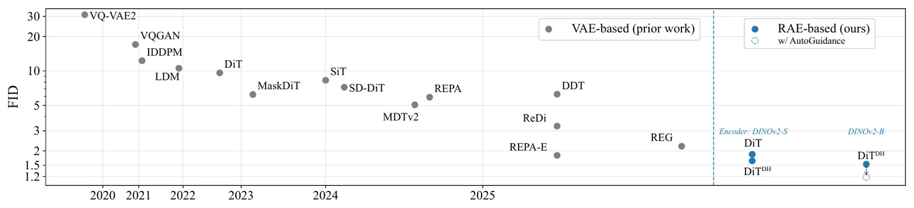
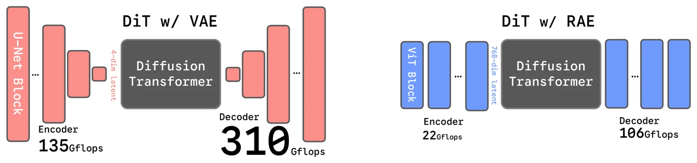
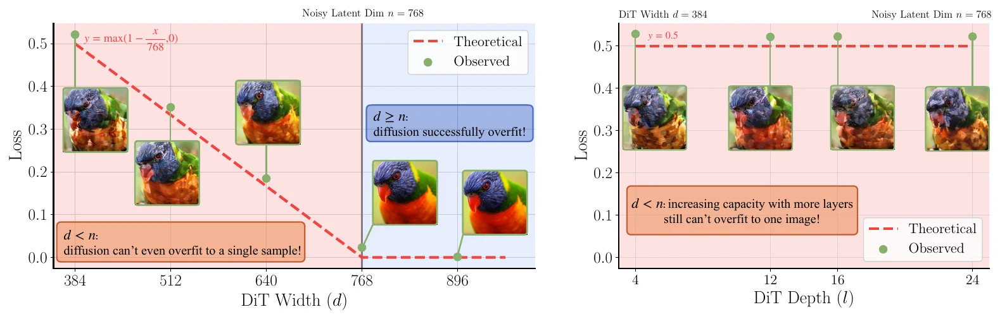
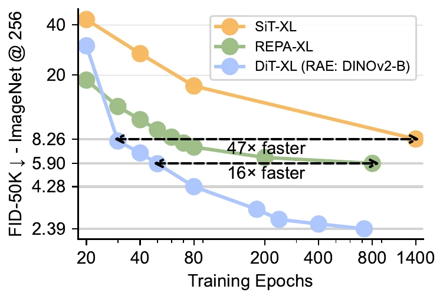
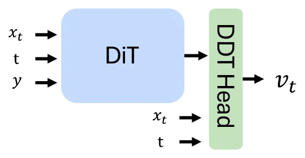
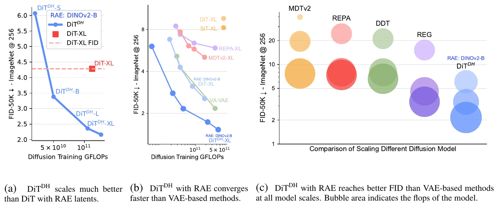
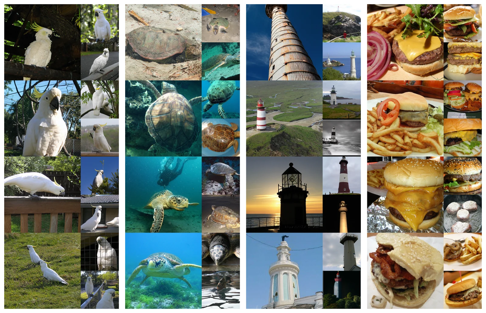
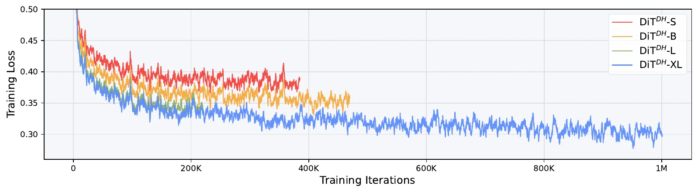

arXiv 2510.11690 · cs.CV · v1 2025 年 10 月 13 日 · ICLR 2026 · 中文精读
Diffusion Transformers with Representation Autoencoders
作者 Boyang Zheng、Nanye Ma、Shengbang Tong、Saining Xie，来自 New York University。
关于这份精读。这篇论文在 arXiv 上以 CC BY 4.0 发布（只要求署名），PDF 页脚只写 “Preprint”，没有与之矛盾的版权声明。这里按原文顺序覆盖正文 7 节和附录 A 到 M，小节编号和原文一致，用自己的话整理，不是逐字翻译。公式按原文编号，表格数字照录原文。
图 1 到图 9 从 arXiv PDF（v1）裁切，只做了裁切、缩放和格式转换，没有改内容，版权归作者，按 CC BY 4.0 署名使用；本批论文是否放原图由站点作者决定。图下的文字是我写的。本页的“读者注”是整理时核算或对照发现的，不属于论文内容，页尾有汇总。
代码。官方代码是 bytetriper/RAE，MIT 许可。我读的是当时最新的提交 a4d18c4（2026-01-20），只读，没有运行。它是作者用 PyTorch/GPU 重写的版本（论文的实验用 TPU 和 PyTorch/XLA），和论文不一致的地方两边都写，见代码对照。
为什么读这篇。OpenWAM §4.1.2 引用它来说明“表示编码器的高维特征和 DiT 不匹配”。本页末尾的“在 OpenWAM 里怎么用”核对了 OpenWAM 页上按 RAE 条件做的推算。
潜空间扩散（LDM、DiT）几年来换了很多次骨干，但定义潜空间的自编码器基本没变：大家还在用 SD-VAE。它的问题有三个：卷积结构老、计算贵；隐变量维度低（256² 的图压成 32 × 32 × 4），装不下多少信息；只靠重建训练，语义结构弱。
这篇的做法很直接：把 VAE 换成一个冻结的预训练表示编码器（DINOv2、SigLIP2、MAE），只训练一个 ViT 解码器把特征还原成像素，称为表示自编码器（Representation Autoencoder，RAE）。难点不在重建，而在于扩散模型要在 256 个 768 维 token 的高维空间里学分布。作者找到三个原因并各给一个解法，再加一个结构改动：
结果：ImageNet 256 × 256 上 DiTDH-XL 不加引导 gFID 1.51，加 AutoGuidance 1.13；512 × 512 加引导也是 1.13。80 个 epoch 就到 2.16。
读完我认为最值得记住的三点：宽度条件是逐 token的，看的是进入 DiT 输入投影的那个向量的维度（打包 patch 之后），这一点对 OpenWAM 的推算很关键（读者注 6、读者注 20）；shift 的基准 4096 正好是 SD-VAE 一张 256² 图的隐变量维度，所以这条规则的意思是“相对 SD-VAE 按维度放大”（读者注 7）；代码里噪声增强的 σ 是均匀分布，不是论文写的半正态分布（读者注 9）。
arXiv 上只有 v1（2025-10-13 提交，页眉是 “Preprint”），本页读的就是它。“ICLR 2026”来自 OpenWAM 的参考文献 [104]（“ICLR, volume 2026, pp. 35791–35820”），我没有看到会议定稿，定稿与 v1 是否有差别未核实。

结论先说：作者认为“语义编码器不适合重建”和“扩散在高维隐空间里训不好”这两个常见看法都不对；只要结构上做几处调整，高维语义隐空间反而收敛更快、生成更好。
背景。潜空间扩散把生成放到一个学到的紧凑空间里做，比直接在像素上做更省、更好。但 SD-VAE 用重度通道压缩、只做重建训练，隐变量只抓到局部外观，缺少全局语义结构；它的卷积结构计算也贵（图 2）。另一边，DINO、MAE、JEPA、CLIP/SigLIP 等表示学习进展很快，但潜空间扩散基本没用上它们。REPA 一类方法用对齐损失“间接”借语义，代价是额外的训练阶段、损失和调参。
两个被质疑的假设。(1) 语义编码器只关注高层信息，重建只能“语义相似”；(2) 扩散模型在高维隐空间表现差。作者的回答：冻结的表示编码器配一个训练的解码器就能重建得比 SD-VAE 好；而高维隐变量几乎不增加计算，因为 token 数由 patch 大小决定，通道只在第一层被投影到 DiT 宽度。
三处难点（对应 §4 的三小节）：DiT 宽度必须超过 token 维度；基于分辨率的 shift 忽略了 token 维度；RAE 解码器只见过离散的训练隐变量，却要解码扩散模型生成的连续分布。最后提出 DiTDH：借鉴 DDT，但出发点不同，是为了在宽度上扩展而不付出二次方的计算。
结论：前人要么让 VAE 去对齐表示编码器（隐变量仍然低维），要么让 DiT 去对齐表示编码器（仍在 VAE 空间里扩散）；这篇直接在表示编码器的特征上扩散。

结论：冻结的表示编码器配一个 ViT 解码器，重建 rFID 全部好于 SD-VAE，解码器还更省；同时保留了编码器原有的表示能力（线性探测 84.5% 对 SD-VAE 的约 8%）。
结构。输入 \(x\in\mathbb R^{3\times H\times W}\)；冻结编码器 \(E\) 的 patch 大小 \(p_e\)、隐层宽度 \(d\)，得到 \(N=HW/p_e^2\) 个 \(d\) 维 token。ViT 解码器 \(D\) 的 patch 大小 \(p_d\)，输出 \(3\times H\frac{p_d}{p_e}\times W\frac{p_d}{p_e}\)；默认 \(p_d=p_e\)，输出和输入同分辨率。256 × 256 的实验里编码器都输出 256 个 token，和多数基于 SD-VAE 的 DiT 的 token 数相同。解码器的损失沿用 VAE 的常见组合：
三个编码器代表三种预训练范式：DINOv2-B（\(p_e=14\)，\(d=768\)，自蒸馏）、SigLIP2-B（\(p_e=16\)，\(d=768\)，语言监督）、MAE-B（\(p_e=16\)，\(d=768\)，掩码自编码）。DINOv2 另试 S、B、L（\(d=384,768,1024\)）。默认解码器 ViT-XL，指标是 ImageNet（Russakovsky 等）验证集重建的 FID，记作 rFID。
| (a) 编码器 | rFID |
|---|---|
| DINOv2-B | 0.49 |
| SigLIP2-B | 0.53 |
| MAE-B | 0.16 |
| SD-VAE | 0.62 |
| (b) 解码器 | rFID | GFLOPs |
|---|---|---|
| ViT-B | 0.58 | 22.2 |
| ViT-L | 0.50 | 78.1 |
| ViT-XL | 0.49 | 106.7 |
| SD-VAE | 0.62 | 310.4 |
| (c) 编码器大小 | rFID |
|---|---|
| DINOv2-S | 0.52 |
| DINOv2-B | 0.49 |
| DINOv2-L | 0.52 |
| (d) 表示质量 | 线性探测 % |
|---|---|
| DINOv2-B | 84.5 |
| SigLIP2-B | 79.1 |
| MAE-B | 68.0 |
| SD-VAE | 8.0 |
表 1 · ImageNet-1K 上的重建和表示质量。未注明时编码器 DINOv2-B、解码器 ViT-XL · 看原表 ↗
MAE-B 的 rFID 0.16 最好；DINOv2 从 S 到 L rFID 基本不变，说明小编码器也保留了足够的低层细节；解码器从 ViT-B 到 ViT-XL，rFID 0.58 → 0.49。ViT-B 已经比 SD-VAE 好，而计算只有它的 1/14；ViT-XL 约为 1/3。
按代码的解码器配置（configs/decoder/ViT*/config.json）估算每张图的乘加数（257 个 token，含 [CLS]）：ViT-B 12 层 × 宽 768 × FFN 3072 → 约 23.0 G；ViT-L 24 × 1024 × 4096 → 80.9 G；ViT-XL 28 × 1152 × 4096 → 110.4 G；DINOv2-B 编码器（261 个 token）→ 23.4 G。和表 1b 的 22.2 / 78.1 / 106.7、图 2 的 22 相差在 5% 以内（我把注意力的二次项也算进去了，略偏大）。所以这些 “GFLOPs” 按乘加计数，不是 2 倍的浮点运算。比例不受影响：310.4 / 22.2 = 14.0（“14 倍”），106.7 / 310.4 = 0.34（“三分之一”），图 2 的 135 / 22 = 6.1、310 / 106 = 2.9。
§3 说默认 \(p_d=p_e\)。但附录 C.1 写明：DINOv2 只有 \(p_e=14\) 的版本，所以把输入插值到 224 × 224（\(224/14=16\)，16 × 16 = 256 个 token），解码器用 \(p_d=16\)，输出 256 × 256。代码里也是 encoder_input_size: 224、decoder_patch_size 默认 16。也就是说默认的 DINOv2-B RAE 本身就带了 16/14 ≈ 1.14 倍的上采样，编码器看到的是缩小过的图。§6.1 的“\(p_d=2p_e\) 得到 2 倍上采样”对 DINOv2 来说实际是 \(p_d=32\)。
结论：标准 DiT 直接用在 RAE 隐空间上会失败（DiT-S gFID 215.76）。作者提出三个假设，§4.1 到 §4.3 逐一验证并修正，合起来 DiT-XL 80 个 epoch 到 gFID 4.28。
编码器先固定为 DINOv2：重建最好的是 MAE，但生成最好的是 DINOv2（附录 G.1）。训练目标是流匹配，线性插值 \(x_t=(1-t)x+t\varepsilon\)，网络预测速度 \(v(x_t,t)\)（附录 J）。骨干是 LightningDiT，patch 大小 1，所以 256 × 256 图的序列长度都是 256，和 VAE 上的 DiT 相同，计算几乎不变。评测用 50 步 Euler 采样 5 万张算 FID（gFID）；没说明时都训 80 个 epoch。
| RAE | SD-VAE | |
|---|---|---|
| DiT-S | 215.76 | 51.74 |
| DiT-XL | 23.08 | 7.13 |
表 2 · 标准 DiT 在 RAE 隐空间上明显差于 SD-VAE（gFID） · 看原表 ↗
三个假设：(1) DiT 的设计是为低维 VAE token 定的，对高维 token 不是最优；(2) 噪声调度和损失加权的技巧来自像素或 VAE 输入，不一定适用于高维语义 token；(3) VAE 解码器本来就见过带噪的隐变量，而 RAE 解码器只见过干净的，可能不适应扩散模型输出里的小误差。
结论：宽度 \(d\) 小于 token 维度 \(n\) 时，扩散模型连一张图都过拟合不了；加深没有用，加宽到 \(d\ge n\) 才收敛。作者给出一个下界定理来解释。
实验。随机挑一张图，用 RAE 编码后只训练这一张。固定深度、把 DiT-S 的宽度从 384 加到 896（正文写到 784，见读者注 4）：\(d<n=768\) 时损失降不下去、样本很差；\(d\ge n\) 时几乎完美复现。再固定 \(d=384\)、把深度从 12 加到 24，样本仍然满是伪影，损失也到不了 \(d=768\) 的水平。

为什么和“数据流形低维”矛盾。通常认为数据流形的内在维度低，GAN 之类不需要按全维度扩容。作者的解释：扩散训练把高斯噪声直接加在数据上，构造 \(x_t\) 时把数据分布的支撑扩到了整个空间，流形被“扩散”成满秩的，所以模型容量要按全维度算。
定理 1。设 \(x\sim p(x)\in\mathbb R^n\)，\(\varepsilon\sim\mathcal N(0,I_n)\)，\(t\in[0,1]\)，\(x_t=(1-t)x+t\varepsilon\)。考虑函数族
其中 \(d<n\)，\(f\) 是宽度小于 token 维度的一叠 DiT 块，\(A\)、\(B\) 是输入和输出的线性投影。那么对任何 \(g\in\mathcal G_d\)，
\(\lambda_i\) 是 \(W=\varepsilon-x\) 协方差矩阵的特征值（从大到小）。\(d\ge n\) 时 \(\mathcal G_d\) 包含唯一的最优解。直观地说：输出总落在 \(B\) 的像空间里，最多 \(d\) 维；目标 \(\varepsilon-x\) 在 \(n\) 维里每个方向都有方差，剩下 \(n-d\) 个方向的方差怎么都学不到。
单张图时 \(p(x)=\delta(x-x_0)\)，\(W\sim\mathcal N(-x_0,I_n)\)，所有 \(\lambda_i=1\)，按维度平均的下界是 \(\tilde{\mathcal L}\ge\frac1n\sum_{i=d+1}^n1=\frac{n-d}{n}\)，就是图 3 的红线。
| 编码器（token 维度） | DiT-S（384） | DiT-B（768） | DiT-L（1024） |
|---|---|---|---|
| DINOv2-S（384） | 3.6e−2 ✓ | 1.0e−3 ✓ | 9.7e−4 ✓ |
| DINOv2-B（768） | 5.2e−1 ✗ | 2.4e−2 ✓ | 1.3e−3 ✓ |
| DINOv2-L（1024） | 6.5e−1 ✗ | 2.7e−1 ✗ | 2.2e−2 ✓ |
表 3 · 单图过拟合的损失，宽度和 token 维度的各种组合（括号里的数是我按表 13 和 §3 补的） · 看原表 ↗
修正 1：DiT 宽度至少等于 RAE 的 token 维度。DINOv2-B（768）之后都配 DiT-XL（1152）。
(1) §4.1 正文说“把宽度从 384 加到 784”，但图 3 的横轴刻度是 384、512、640、768、896，附录 F 列的也是 {384, 512, 640, 768, 896}，784 应是 896 的笔误。(2) 附录 F 写“depth varies in {384, 512, 640, 768, 896} and width varies in {4, 12, 16, 24}”，深度和宽度写反了；按图 3，宽度取 384 到 896，深度取 4 到 24。另外附录 F 的默认设置是“深度 12、宽度 768、4 个注意力头”，和 §4.1 说的“用 DiT-S（宽 384）”也不是同一个起点，以图 3 为准。
按 \((n-d)/n\) 算表 3 的三个失败格：DiT-S + DINOv2-B 是 \((768-384)/768=0.50\)，观测 0.52；DiT-S + DINOv2-L 是 \((1024-384)/1024=0.625\)，观测 0.65；DiT-B + DINOv2-L 是 \((1024-768)/1024=0.25\)，观测 0.27。都比下界高 0.02 到 0.025，符合“下界”的意思。图 3 左的读数（目测）：宽 512 约 0.35（下界 0.333），640 约 0.18（0.167），768 约 0.02，896 约 0；右图四个深度都约 0.52。
定理里 \(x\in\mathbb R^n\) 是“一个 token”。实际 DiT 处理 256 个 token，但输入投影 \(A\) 和输出投影 \(B\) 对每个 token 单独作用（patch 嵌入、最后的线性层），所以每个输出 token 都落在 \(B\) 的像空间里（加偏置也只是平移），中间的注意力怎么混合都跳不出去。投影论证于是逐 token 成立：设 \(P_\perp\) 是到 \(B\) 像空间正交补的投影，\({\rm rank}\,B\le d\)，
中间的等号用到 \(\varepsilon\) 与 \(x\) 独立、均值为 0。这一步不需要知道 \(p(x)\)，所以对类别条件、文本条件、或“给定历史帧预测未来帧”同样成立：每个 token 至少有 \(n-d\) 个噪声方向学不到。这里的 \(n\) 是进入输入投影的向量的维度：patch 大小为 \(p\) 时是 \(p^2C\)，不是通道数 \(C\)。论文 §6.3 把 16 × 16 的像素 patch 算成 \(16\times16\times3=768\) 维，代码里 DDT 的 x_channel_per_token = in_channels * patch_size**2，都按这个算。RAE 自己用 patch 1，所以 \(n=C\)。
结论：前人发现分辨率越高、同一噪声水平下信息破坏越少，于是按分辨率调 shift。作者把“分辨率”推广成有效数据维度 = token 数 × token 维度，同样的 shift 公式代入后 gFID 从 23.08 降到 4.81。
理由：噪声同时加在空间和通道维度上，通道越多，每个 token 的“有效分辨率”越高，信息破坏越少。前人的结论主要来自通道很少的输入（\(C\le16\)）。采用 SD3（Esser 等）的做法：对调度 \(t_n\in[0,1]\) 和输入维度 \(n\)、\(m\)，
基准维度 \(n=4096\)，\(m\) 取 RAE 的有效数据维度。这里 \(t=1\) 是纯噪声，\(\alpha>1\) 把时间步推向高噪声一侧。
| gFID | |
|---|---|
| 不加 shift | 23.08 |
| 加 shift | 4.81 |
表 4 · shift 的作用（DiT-XL，DINOv2-B） · 看原表 ↗
修正 2：之后的实验都按有效数据维度设 shift。
DINOv2-B 在 256 × 256 上：\(m=256\times768=196{,}608\)，\(\alpha=\sqrt{196608/4096}=\sqrt{48}=6.93\)。代码里写的正是 time_dist_shift_dim: 196608、time_dist_shift_base: 4096，train.py 第 139 行 math.sqrt(shift_dim / shift_base)。512 × 512（1024 个 token）是 \(\sqrt{786432/4096}=\sqrt{192}=13.86\)。
基准 4096 恰好等于 SD-VAE 把 256² 图压成的 \(32\times32\times4=4096\)，所以在 SD-VAE 上训练的 DiT 对应 \(\alpha=1\)，即不 shift。这条规则可以读成“以 SD-VAE 的 256² 设置为基准，按有效维度的平方根放大 \(\alpha\)”。这是我的解读，论文只说“沿用 Esser 等的 4096”。
代码的方向我也核对了：transport/path.py 的 ICPlan 里噪声系数是 \(t\)、数据系数是 \(1-t\)，所以 \(t=1\) 是噪声，\(\alpha t/(1+(\alpha-1)t)\ge t\) 确实把训练和采样的时间步推向高噪声，和论文一致。
所有 stage-2 训练配置都写 time_dist_type: 'logit-normal_0_1'，transport.py 的 sample() 先从截断的 logit-normal(0, 1) 抽 \(t\)，再做上面的 shift。论文正文和附录 D 只说用流匹配和维度相关的 shift，没写 logit-normal。两种分布叠加后，训练的时间步会更集中在中高噪声段；这对复现有影响。
结论：训练解码器时给隐变量加随机强度的高斯噪声。gFID 4.81 → 4.28，rFID 0.49 → 0.57，是一个预期中的取舍。
VAE 的隐变量本来是连续分布 \(\mathcal N(\mu,\sigma^2I)\)；RAE 解码器却只在离散的训练集隐变量 \(p(z)=\sum_i\delta(z-z_i)\) 上训练（原文这里把 \(z\) 写成了 \(x\)）。扩散模型生成的隐变量会有噪声或轻微偏离，对解码器是分布外输入。借鉴归一化流里的去量化做法，给隐变量加噪声 \(n\sim\mathcal N(0,\sigma^2I)\)，让解码器在平滑后的分布上训练：
| gFID | rFID | |
|---|---|---|
| \(z\sim p(z)\) | 4.81 | 0.49 |
| \(z\sim p_n(z)\) | 4.28 | 0.57 |
表 5 · 噪声增强的作用（τ = 0.8） · 看原表 ↗
修正 3：之后都用噪声增强训练的解码器。三项合起来，DiT-XL 在 80 个 epoch 到 gFID 4.28，720 个 epoch 到 2.39。
stage1/rae.py 第 74 行：noise_sigma = self.noise_tau * torch.rand(...)，即 \(\sigma\sim\tau\cdot U(0,1)\)，每个样本一个 σ。论文写 \(\sigma\sim|\mathcal N(0,\tau^2)|\)。取 \(\tau=0.8\)：论文的 σ 均值 \(\tau\sqrt{2/\pi}=0.64\)、可以超过 0.8（约 32% 的概率）；代码的均值 0.40、最大 0.8。两者明显不同，表 5 和表 15 用的是哪一种未核实。另外附录 G.2 写“with σ = 0.8”，按上下文指的是 τ。注意 RAE 的隐变量在 LayerNorm 后每个通道方差约为 1，所以 σ = 0.4 已经是相当大的噪声。

按图 4 的点：RAE 曲线大约在 30 个 epoch 到 8.26，\(1400/30\approx47\)；大约在 50 个 epoch 到 5.90，\(800/50=16\)。是按 epoch 比，不是按 FLOPs 比（同为 XL，每个 epoch 计算量相近）。另外 SiT-XL 的终点在图 4 是 8.26，在表 8 是 8.61，在表 14 的“均衡采样”列是 8.54，三个数来自不同的评测方式，图 4 的 8.26 出处论文没说，未核实。
自己画的 · 11 幕 3D 框架动画
核心框架拆成 11 幕：两种隐空间、RAE 结构、重建结果、宽度小于维度为什么失败（第 4 幕，可以改宽度 d 和维度 n）、维度相关的 shift、噪声增强解码、DiTDH、训练和采样、结果、§6 的讨论、在 OpenWAM 里怎么接。下面嵌的是第 4 幕。
结论：按 §4 的规则，要处理更高维的 RAE 隐变量就得把整个 DiT 加宽，计算按宽度的平方涨。DiTDH 只在最后接一个浅而宽的“DDT 头”，用很少的计算满足宽度条件，收敛更快、FID 更好。

DiTDH 由基础 DiT \(M\) 和一个宽而浅的 Transformer 头 \(H\) 组成：
所有 DiTDH 都用 2 层、宽 2048 的头。代码（stage2/models/DDT.py）里的连法：头用自己的嵌入层把 \(x_t\) 直接投到 2048 维；骨干输出 \(s\) 加上时间嵌入过 SiLU，再线性投到 2048 维，逐 token 作为头里 adaLN 的条件；头的最后一层从 2048 维还原到 768 维。所以从 \(x_t\) 到 \(v_t\) 的主路径最窄处是 2048，不是骨干的 1152。

收敛更快。DiTDH-B 只用 DiT-XL 约 40% 的训练 FLOPs 就明显更好；同等预算下 DiTDH-XL 到 2.16，差不多是 DiT-XL 的一半。
| 模型 | DINOv2-S | DINOv2-B | DINOv2-L |
|---|---|---|---|
| DiT-XL | 3.50 | 4.28 | 6.09 |
| DiTDH-XL | 2.42 | 2.16 | 2.73 |
表 6 · 不同 RAE 编码器上 DiTDH 都更好（gFID，80 epoch） · 看原表 ↗
编码器越大，优势越大。DINOv2-L 上 6.09 → 2.73。作者的解释：编码器越大隐变量维度越高，DiT 的宽度瓶颈越明显；DDT 头满足了宽度条件，同时让骨干特征保持紧凑，还能滤掉高维隐变量里更多的噪声信息。
按 DDT.py 的层定义（SwiGLU 隐层 \(\lfloor\frac23\cdot4h\rfloor\)、adaLN 输出 \(6h\)、RMSNorm、Gaussian Fourier 时间嵌入 512 → h → h、1001 类标签嵌入）逐项相加：DiTDH-XL（骨干 28 × 1152 + 头 2 × 2048）= 838.4M，表 8 写 839M；同样算法的 DiT-XL = 677.0M，表 8 写 676M（DINOv2-S 版输入只有 384 维，少约 0.9M，正好 676M）。头本身约 161M，接近骨干参数的四分之一。脚本是我写的，没有运行官方代码。
用同一套参数计数估每张图前向的乘加数（256 个 token，含注意力）：DiT-XL 177 G，DiTDH-B 77 G，DiTDH-XL 219 G。DiTDH-B / DiT-XL = 0.43，和“约 40%”一致。再乘 2（乘加 → 浮点）× 3（前向 + 反向）× 80 epoch × 1,281,167 张：DiTDH-XL 约 \(1.35\times10^{11}\) GFLOPs，DiT-XL 约 \(1.09\times10^{11}\)，和图 6a 上两点的横坐标量级相符（目测读数，未精确核实）。
DiT-XL 宽 1152，大于 DINOv2-L 的 1024，按定理已经满足条件，可表 6 里它仍从 4.28 退到 6.09。表 17 也一样：DDT 头宽 768 配 DINOv2-B（768，正好相等）是 2.49，宽 2048 是 2.16；配 DINOv2-L 时宽 768 直接标 N/A（不满足条件），1536 到 2688 一路改善到 2.64。所以“\(d\ge n\)”只保证损失没有那块硬下界；实际还需要明显的余量。这对判断 OpenWAM 里“DINOv3 正好等于宽度”的情况有用（读者注 22）。
结论：DiTDH-XL（DINOv2-B）在 ImageNet 256 上不加引导 gFID 1.51、加 AutoGuidance 1.13；512 上训 400 个 epoch，加引导 1.13，好于 EDM2 的 1.25。
收敛。按训练 GFLOPs 看（图 6b），约 \(5\times10^{10}\) GFLOPs 时已超过 REPA-XL、MDTv2-XL、SiT-XL 的最终成绩；到 \(5\times10^{11}\) 时 FID 全场最好，计算少 40 倍以上。规模。DiTDH-S 6.07，已经好于大得多的 REPA-XL；到 B 是 3.38；XL 在 80 个 epoch 到 2.16。
| 方法 | Epochs | 参数 | 256，不加引导 | 256，加引导 | ||||||
|---|---|---|---|---|---|---|---|---|---|---|
| gFID↓ | IS↑ | Prec.↑ | Rec.↑ | gFID↓ | IS↑ | Prec.↑ | Rec.↑ | |||
| 自回归 | ||||||||||
| VAR | 350 | 2.0B | 1.92 | 323.1 | 0.82 | 0.59 | 1.73 | 350.2 | 0.82 | 0.60 |
| MAR | 800 | 943M | 2.35 | 227.8 | 0.79 | 0.62 | 1.55 | 303.7 | 0.81 | 0.62 |
| xAR | 800 | 1.1B | – | – | – | – | 1.24 | 301.6 | 0.83 | 0.64 |
| 像素扩散 | ||||||||||
| ADM | 400 | 554M | 10.94 | 101.0 | 0.69 | 0.63 | 3.94 | 215.8 | 0.83 | 0.53 |
| RIN | 480 | 410M | 3.42 | 182.0 | – | – | – | – | – | – |
| PixelFlow | 320 | 677M | – | – | – | – | 1.98 | 282.1 | 0.81 | 0.60 |
| PixNerd | 160 | 700M | – | – | – | – | 2.15 | 297.0 | 0.79 | 0.59 |
| SiD2 | 1280 | – | – | – | – | – | 1.38 | – | – | – |
| VAE 隐空间扩散 | ||||||||||
| DiT | 1400 | 675M | 9.62 | 121.5 | 0.67 | 0.67 | 2.27 | 278.2 | 0.83 | 0.57 |
| MaskDiT | 1600 | 675M | 5.69 | 177.9 | 0.74 | 0.60 | 2.28 | 276.6 | 0.80 | 0.61 |
| SiT | 1400 | 675M | 8.61 | 131.7 | 0.68 | 0.67 | 2.06 | 270.3 | 0.82 | 0.59 |
| MDTv2 | 1080 | 675M | – | – | – | – | 1.58 | 314.7 | 0.79 | 0.65 |
| VA-VAE | 80 | 675M | 4.29 | – | – | – | – | – | – | – |
| 800 | 2.17 | 205.6 | 0.77 | 0.65 | 1.35 | 295.3 | 0.79 | 0.65 | ||
| REPA | 80 | 675M | 7.90 | 122.6 | 0.70 | 0.65 | – | – | – | – |
| 800 | 5.78 | 158.3 | 0.70 | 0.68 | 1.29 | 306.3 | 0.79 | 0.64 | ||
| DDT | 80 | 675M | 6.62 | 135.2 | 0.69 | 0.67 | 1.52 | 263.7 | 0.78 | 0.63 |
| 400 | 6.27 | 154.7 | 0.68 | 0.69 | 1.26 | 310.6 | 0.79 | 0.65 | ||
| REPA-E | 80 | 675M | 3.46 | 159.8 | 0.77 | 0.63 | 1.67 | 266.3 | 0.80 | 0.63 |
| 800 | 1.70 | 217.3 | 0.77 | 0.66 | 1.15 | 304.0 | 0.79 | 0.66 | ||
| RAE 隐空间扩散（本文） | ||||||||||
| DiT-XL（DINOv2-S） | 800 | 676M | 1.87 | 209.7 | 0.80 | 0.63 | 1.41 | 309.4 | 0.80 | 0.63 |
| DiTDH-XL（DINOv2-B） | 20 | 839M | 3.71 | 198.7 | 0.86 | 0.50 | – | – | – | – |
| 80 | 2.16 | 214.8 | 0.82 | 0.59 | – | – | – | – | ||
| 800 | 1.51 | 242.9 | 0.79 | 0.63 | 1.13 | 262.6 | 0.78 | 0.67 | ||
表 8 · ImageNet 256 × 256 类条件生成。作者发现前人 FID 评测协议不一致，对几个基线重新采样，所以有些数比原报告高（见 §5.1 末和附录 E） · 看原表 ↗
| 方法（512，加引导） | gFID↓ | IS↑ | Prec.↑ | Rec.↑ |
|---|---|---|---|---|
| BigGAN-deep | 8.43 | 177.9 | 0.88 | 0.29 |
| StyleGAN-XL | 2.41 | 267.8 | 0.77 | 0.52 |
| VAR | 2.63 | 303.2 | – | – |
| MAGVIT-v2 | 1.91 | 324.3 | – | – |
| XAR | 1.70 | 281.5 | – | – |
| ADM | 3.85 | 221.7 | 0.84 | 0.53 |
| SiD2 | 1.50 | – | – | – |
| DiT | 3.04 | 240.8 | 0.84 | 0.54 |
| SiT | 2.62 | 252.2 | 0.84 | 0.57 |
| DiffiT | 2.67 | 252.1 | 0.83 | 0.55 |
| REPA | 2.08 | 274.6 | 0.83 | 0.58 |
| DDT | 1.28 | 305.1 | 0.80 | 0.63 |
| EDM2 | 1.25 | – | – | – |
| DiTDH-XL（DINOv2-B） | 1.13 | 259.6 | 0.80 | 0.63 |
表 7 · ImageNet 512 × 512 类条件生成，加引导；DiTDH 训 400 个 epoch · 看原表 ↗
关于 FID 评测。凑 5 万张样本有两种做法：每类正好 50 张（DDT、VAR、MAR、xAR），或在 1000 类里均匀随机抽标签。作者发现类别均衡的做法稳定地低约 0.1。为公平起见，他们用均衡采样重测了有公开检查点的 SiT、REPA、REPA-E 并更新了表中的数（详见附录 E）。

表 8 的图注说重测了几个基线。对照附录表 14：REPA（5.78 / 1.29）、DDT（6.27 / 1.26）、REPA-E（1.70 / 1.15）在表 8 里用的都是“均衡”列；但 SiT 在表 8 是 8.61 / 2.06，这是表 14 的“随机”列（灰色，即官方报告值），均衡列是 8.54 / 1.95。所以表 8 的 SiT 行比其他基线吃亏约 0.07 到 0.11。不影响结论，但和图注说法不一致。另外表 14 里 REPA-E 不加引导的 IS 两列都是 217.3，加引导时均衡列 IS（304.0）反而低于随机列（314.9），原因论文没说。
结论：让解码器负责放大：256 个 token 配一个 \(p_d=2p_e\) 的解码器直接出 512 × 512，不用重训扩散模型，gFID 1.61，比直接在 1024 个 token 上训练（1.13）差一些，但便宜 4 倍。
| 方法 | token 数 | gFID↓ | rFID↓ |
|---|---|---|---|
| 直接 512 训练 | 1024 | 1.13 | 0.53 |
| 解码器上采样 | 256 | 1.61 | 0.97 |
表 9 · ImageNet 512 × 512，两者都训 400 个 epoch · 看原表 ↗
结论：没用。在 SD-VAE 隐空间（patch 2）上，DiTDH-XL 反而比 DiT-XL 差（11.70 对 7.13）。宽头的好处只在高维隐空间里出现。
| VAE | DINOv2-B | |
|---|---|---|
| DiT-XL | 7.13 | 4.28 |
| DiTDH-XL | 11.70 | 2.16 |
表 10 · VAE 上 DiTDH 更差（80 epoch，不加引导） · 看原表 ↗
结论：光是高维不够。直接在像素上（patch 16，每个 token \(16\times16\times3=768\) 维，和 DINOv2-B 一样）训练，DiTDH 比 DiT 好，但两者都远差于在 RAE 上训练。
| 像素 | DINOv2-B | |
|---|---|---|
| DiT-XL | 51.09 | 4.28 |
| DiTDH-XL | 30.56 | 2.16 |
表 11 · 像素扩散远差于 RAE（80 epoch，不加引导） · 看原表 ↗
冻结的表示编码器加一个轻量解码器就是有效的自编码器（RAE）。在它的隐空间上训练 DiT 需要三处改动：宽度匹配 token 维度、按维度 shift 噪声调度、解码器噪声增强；再加宽而浅的 DDT 头。作者认为 RAE 隐空间应成为训练扩散 Transformer 的新默认选择。
结论：和 RAE 最接近的是 UniLIP（在 InternViT 上接卷积解码器，但要大规模微调编码器）；作者强调冻结编码器就够了。
B.1 定理 1 的证明思路。(1) 由 Albergo 等，最优速度 \(v(x_t,t)=\mathbb E[\varepsilon-x\mid x_t]\) 在连续可微函数族中唯一存在。(2) 目标 \(y=\varepsilon-x\) 和 \(x_t\) 的密度在 \(\mathbb R^n\) 上处处为正（满支撑）。(3) 对任何 \(g\in\mathcal G_d\)，\({\rm Im}(g)\subseteq{\rm Im}(B)\)，维度不超过 \(d<n\)。(4) 由投影定理，\(\|g(x_t,t)-y\|^2\ge\|u_g-y\|^2\)，\(u_g\) 是 \(y\) 在 \({\rm Im}(g)\) 上的投影（式 (3)）；取期望再对所有维度不超过 \(d\) 的子空间取下确界（式 (4)），在 \(\mathbb E[x]=0\) 的假设下展开为 \({\rm Tr}\,{\rm Cov}(y)-\sup_S{\rm Tr}\,{\rm Cov}(P_Sy)\)，由 Ky Fan 极大原理得 \(\sum_{i=d+1}^n\lambda_i\)（式 (5)）。非零均值会多出 \(\|\mu\|^2-\|P_S\mu\|^2\)，作者以“数据通常已居中”略去。
B.2 定理 2（推理误差下界）。设最优速度场 \(f^*\) 关于 \(x\) 是 \(L\)-Lipschitz 的，\(x_0\)、\(x_0^*\) 分别是从同一噪声出发、用 \(g\) 和 \(f^*\) 积分 ODE 得到的样本，则
证明把反向 ODE 改写成正向，对两条轨迹之差求导并用三角不等式（式 (7)），再用 Gronwall 引理积分（式 (8)）。
式 (8) 用了 \(\|\Delta\|\ge\sum_{i=d+1}^n\lambda_i\)，理由是“由定理 1”。但定理 1 给的是期望平方误差的下界，\(\|\Delta\|\) 是逐点的范数，量纲差一个平方，也不是期望。逐点地说，只能得到 \(\|\Delta\|\ge\|P_\perp(\cdot)\|\)，没有一个确定的常数下界。所以式 (6) 更适合当作定性的说法：训练误差下界会传到采样误差上。这是我的看法，不影响正文的实验结论。另外式 (7) 的三角不等式方向也需要 \(\|\Delta\|\) 处处大于 \(L\|x^*-x\|\) 才有意义，原文没讨论。
C.1 编码器归一化。丢掉编码器输出的 [CLS] 和 [REG] token，只留 patch token；对每个 token 做不带仿射参数的 LayerNorm，使每个 token 在通道上零均值、单位方差。这些编码器都是标准 ViT，最后已有 LayerNorm，所以只需把它的仿射参数去掉（线性变换，不影响表示质量）。DINOv2 用带 register 的版本，输入插值到 224、\(p_d=16\)（见读者注 3）。
C.2 解码器训练。ImageNet-1K，多数在 256 × 256；512 的直接训练在 512 图上。解码器把编码器 token 还原成像素，沿用 MAE 的做法在序列前加一个可学的 [CLS] token、解码后丢弃。判别器沿用 StyleGAN-T 的大部分设计，但用冻结的 DINO-S/8（不是 S/16），作者说这样训练更稳、避免解码器生成对抗性的 patch；把 virtual batch norm 换成普通 BN；判别器输入一律插值到 224。损失权重 \(\omega_L=1\)、\(\omega_G=0.75\)，GAN 用自适应权重：
数据增强：先缩放到 384 再随机裁 256；判别器前加可微增强（DiffAug 默认参数）。
| 项 | 解码器 | 判别器 |
|---|---|---|
| 优化器 | Adam | Adam |
| 最大学习率 | 2 × 10⁻⁴ | 2 × 10⁻⁴ |
| 最小学习率 | 2 × 10⁻⁵ | 2 × 10⁻⁵ |
| 学习率调度 | 余弦衰减 | 余弦衰减 |
| betas | (0.5, 0.9) | (0.5, 0.9) |
| 权重衰减 | 0 | 0 |
| batch | 512 | 512 |
| warmup | 1 epoch | 1 epoch |
| 损失 | ℓ1 + LPIPS + GAN | 对抗 |
| 模型 | ViT-(B, L, XL) | Dino-S/8（冻结） |
| LPIPS 起始 epoch | 0 | – |
| 判别器起始 epoch | – | 6 |
| 对抗损失起始 epoch | 8 | – |
| 训练 epoch | 16 | 10 |
configs/stage1/training/DINOv2-B_decXL.yaml：解码器和判别器的 betas 都是 [0.9, 0.95]，表 12 写 (0.5, 0.9)；代码另有解码器 EMA 0.9978，论文没提；判别器余弦调度也是 16 个 epoch 结束（decay_end_epoch: 16），表 12 说判别器训 10 个 epoch，和“第 6 个 epoch 开始、到第 16 个结束”恰好是 10 个 epoch，对得上。disc_upd_start: 6、disc_start: 8、disc_weight: 0.75、perceptual_weight: 1.0、noise_tau: 0.8 都和论文一致。ViT-XL 解码器的 FFN 是 4096（decoder_intermediate_size），不是常见的 4 × 1152 = 4608。
结论：骨干是 LightningDiT，连续时间流匹配，时间嵌入换成 Gaussian Fourier，输入在 RoPE 之外还加绝对位置编码（作者说加不加差别不大）。DiTDH 的头不再加位置编码，骨干和头宽度不同时用一个线性层对接。
计算。RAE 用 patch 1，VAE 基线 patch 2，像素基线 patch 16，256 × 256 时序列长度都是 256；patchify 不到总 GFLOPs 的 1%。优化。DiT 完全沿用 LightningDiT：AdamW、常数学习率 2 × 10⁻⁴、batch 1024、EMA 0.9999。DiTDH 用那套设置后期会有损失尖峰、早期 EMA 收敛慢，所以改为：学习率 2 × 10⁻⁴ 线性衰减到 2 × 10⁻⁵，40 个 epoch 常数 warmup，EMA 0.9995，梯度裁剪 1.0。默认 80 个 epoch，只报 EMA 模型。采样。Euler 50 步 ODE，50 步以上基本收敛。算力。RAE 的训练和推理都在 TPU 上用 PyTorch/XLA；评测用一台 v6e-8 生成 5 万张；800 epoch 那个结果在 4 张 A100 上生成，FID 在 CPU 上算。VAE 基线用内部 JAX 代码。
| 配置 | 宽度 | 头数 | 深度 |
|---|---|---|---|
| S | 384 | 6 | 12 |
| B | 768 | 12 | 12 |
| L | 1024 | 16 | 24 |
| XL | 1152 | 16 | 28 |
| XXL | 1280 | 16 | 32 |
| H | 1536 | 16 | 32 |
| G | 2048 | 16 | 40 |
| T | 2688 | 21 | 40 |
800 epoch × 1,281,167 张 / batch 1024 ≈ 1,000,912 步，和图 9 里 DiTDH-XL 曲线画到约 1M 步一致。代码 DiTDH-XL_DINOv2-B.yaml 写 epochs: 1400，但学习率在第 800 个 epoch 降到最低（decay_end_epoch: 800），warmup 40、EMA 0.9995、梯度裁剪 1.0、betas (0.9, 0.95) 都和附录 D 一致（附录 D 只说 AdamW，没给 betas）。代码里的 DiT 宽度、深度、头数（[1152, 2048]、[28, 2]、[16, 16]）和表 13 一致；代码还开了 SwiGLU、RMSNorm、RoPE，这是 LightningDiT 的默认，论文没逐项写。
configs/stage2/training/ImageNet512/DiTDH-XL_DINOv2-B.yaml 用 448 输入（\((448/14)^2=1024\) 个 token），但写的是 input_size: 16、latent_size: [768, 16, 16]、time_dist_shift_dim: 196608，都是 256 的设置；对应的采样配置是 input_size: 32、time_dist_shift_dim: 786432（\(\alpha=13.86\)）。照训练配置原样跑，形状会对不上，shift 也只有 6.93。应是复制时漏改，未运行验证。
E 结论：每个方法用类别均衡采样，FID 都比随机标签采样低一点。作者推测原因：ImageNet 训练集 1000 类里有 895 类正好 1300 张，接近均衡，均衡采样更接近真实标签分布；FID 越低，这些细节越重要。
| 方法 | Epochs | 不加引导 | 加引导 | ||||||
|---|---|---|---|---|---|---|---|---|---|
| 随机 gFID | IS | 均衡 gFID | IS | 随机 gFID | IS | 均衡 gFID | IS | ||
| VAR | 350 | – | – | 1.92 | 323.1 | – | – | 1.73 | 350.2 |
| MAR | 800 | – | – | 2.35 | 227.8 | – | – | 1.55 | 303.7 |
| xAR-H | 800 | – | – | – | – | – | – | 1.24 | 301.6 |
| SiT | 1400 | 8.61 | 131.7 | 8.54 | 132.0 | 2.06 | 270.3 | 1.95 | 259.5 |
| REPA | 800 | 5.90 | 157.8 | 5.78 | 158.3 | 1.42 | 305.7 | 1.29 | 306.3 |
| DDT | 400 | – | – | 6.27 | 154.7 | 1.40 | 303.6 | 1.26 | 310.6 |
| REPA-E | 800 | 1.83 | 217.3 | 1.70 | 217.3 | 1.26 | 314.9 | 1.15 | 304.0 |
| DiTDH-XL（DINOv2-B） | 800 | 1.60 | 242.7 | 1.51 | 242.9 | 1.28 | 262.9 | 1.13 | 262.6 |
原表里官方报告的数用灰色标出，这里没有区分 · 看原表 ↗
F 理论实验设置。三张图各训三次取平均，缩放到 256、不做增强；batch 32（单张图时 batch 只影响时间步）、AdamW（β = (0.9, 0.95)）、常数学习率 2 × 10⁻⁴、1200 步、不用 EMA；Euler 25 步采样。宽度和深度的取值有笔误，见读者注 4。
G.1 不同编码器的生成。DINOv2-B 生成最好；MAE 的 rFID 最低但生成最差，说明低 rFID 不代表好分词器。G.2 噪声增强。τ 越大 gFID 越好、rFID 越差；对弱编码器效果最大（MAE-B 16.14 → 8.38）；不同大小的 DINOv2 都有效。G.3 DDT 头。参数量相近时，2 层宽 2048 的头好于 6 层宽 1152 的；4 层宽 2048 计算翻倍却不更好，所以头要宽而浅。编码器越大，最优头越宽：S、B 在 2048 饱和，L 到 2688 还在变好。
| (a)(b) 编码器 | gFID 不加 | gFID 加 | rFID 不加 | rFID 加 |
|---|---|---|---|---|
| DINOv2-B | 4.81 | 4.28 | 0.49 | 0.57 |
| SigLIP2-B | 6.69 | 4.93 | 0.53 | 0.82 |
| MAE-B | 16.14 | 8.38 | 0.16 | 0.28 |
| DINOv2-S | 3.83 | 3.50 | 0.52 | 0.64 |
| DINOv2-L | 6.77 | 6.09 | 0.52 | 0.59 |
| (c) τ（DINOv2-B） | 0.0 | 0.5 | 0.8 | 1.0 |
|---|---|---|---|---|
| gFID | 4.81 | 4.39 | 4.28 | 4.20 |
| rFID | 0.49 | 0.54 | 0.57 | 0.60 |
表 15 · 噪声增强解码的消融：不加 / 加噪声增强（τ = 0.8；DiT-XL，80 epoch）。原文 (b) 表里 DINOv2-B 一行与 (a) 相同，这里合并 · 看原表 ↗
| 头 | GFLOPs | FID↓ |
|---|---|---|
| 6 层 × 1152（XL） | 25.65 | 2.36 |
| 4 层 × 2048（G） | 53.14 | 2.31 |
| 2 层 × 2048（G） | 26.78 | 2.16 |
表 16 · 头要宽而浅
| 编码器 | 2-768 | 2-1536 | 2-2048 | 2-2688 |
|---|---|---|---|---|
| Dino-S | 2.66 | 2.47 | 2.42 | 2.43 |
| Dino-B | 2.49 | 2.24 | 2.16 | 2.22 |
| Dino-L | N/A | 2.95 | 2.73 | 2.64 |
表 17 · 不同 RAE 和头宽的 gFID（骨干 DiT-XL；d-w 表示 d 层、宽 w）
H 规模和训练损失。算力越大，DiTDH 收敛越快、最终损失越低。

I 引导。主要用 AutoGuidance：用一个更弱的扩散模型去引导强模型，类似 CFG 的原理。越弱、越早期的检查点引导效果越强，所以用最小的 DiTDH-S 的早期检查点。默认引导强度 1.5、20 epoch 的 DiTDH-S；最好的 1.13 用的是强度 1.42、14 epoch 的 DiTDH-S，作者说训练这个引导模型只花了 DiTDH-XL（800 epoch）约 0.05% 的计算。CFG 不加区间时反而让 FID 变差；加引导区间并仔细搜参后有竞争力，但在最终模型上仍不如 AutoGuidance。只有表 8 的 DiT-XL（DINOv2-S）加引导结果用了带区间的 CFG。
用读者注 12 的前向乘加估计：DiTDH-S 每张图 51 G，DiTDH-XL 219 G。引导模型 14 个 epoch 对主模型 800 个 epoch：\(\frac{51\times14}{219\times800}\approx0.41\%\)，比论文的 0.05% 大约 8 倍。代码的采样配置确认引导模型是 hidden_size: [384, 2048]、depth: [12, 2]（带 2 层宽 2048 的头，所以不算很小）、检查点 DiTDH-S_ep14、强度 1.42。差距从哪来未核实，不影响结论“引导模型很便宜”。
J 流模型。线性插值 \(x_t=(1-t)x+t\varepsilon\)，\(t=1\) 是纯噪声。ODE \(dx_t=v(x_t,t)dt\)，SDE 另加分数项和噪声项。速度 \(v=\mathbb E[\varepsilon-x\mid x_t]\)，用 \(\mathcal L_{\rm velocity}(\theta)=\int_0^1\mathbb E\|v_\theta(x_t,t)-(\varepsilon-x)\|^2dt\) 训练；分数 \(s=-\frac1t\mathbb E[\varepsilon\mid x_t]\)，和 \(v\) 只差常数因子，估一个就够。
K 评测。严格沿用 ADM 的评测代码和参考批次（guided-diffusion/evaluations），TPU 生成、一张 A100 80GB 评测。FID 比较真实和生成图在 Inception-v3 特征上的高斯分布距离；IS 看 Inception logits 的边缘分布与条件分布的 KL；precision 看生成图像有多少“像真的”，recall 看覆盖了多少真实数据流形。
L 无条件生成。训练时标签全设为空（沿用 RCG），没有 CFG 可用但 AutoGuidance 可以；DiTDH-XL 训 200 epoch 加 AG。
| 方法 | gFID↓ | IS↑ |
|---|---|---|
| DiT-XL + VAE | 30.68 | 32.73 |
| DiTDH-XL + DINOv2-B（加 AG） | 4.96 | 123.12 |
| RCG + DiT-XL | 4.89 | 143.2 |
表 18 · ImageNet 256 无条件生成 · 看原表 ↗
M 样本。图 10 到 15 是 512 × 512 DiTDH-XL（DINOv2-B，AutoGuidance 1.5）的未挑选样本，类别依次是金毛（207）、哈士奇（250）、悬崖（972）、金刚鹦鹉（88）、北极狐（279）、气球（417）。这里不放，看原图 ↗。
代码 bytetriper/RAE @ a4d18c4（2026-01-20，MIT），只读未运行。README 说这是 PyTorch/GPU 版本，论文实验在 TPU 上做。分两阶段：train_stage1.py 训解码器，train.py 训扩散模型。
| 项 | 论文 | 代码 | |
|---|---|---|---|
| 编码器 | DINOv2-B with registers，丢 CLS/REG，去掉最后 LN 的仿射 | encoders/dinov2.py：丢前 5 个 token（1 CLS + 4 register），layernorm.elementwise_affine=False | 一致 |
| 隐变量归一化 | 只有逐 token LN | 扩散阶段另外按 ImageNet 统计的逐通道均值方差标准化（normalization_stat_path，rae.py 第 91–94 行） | 多一步 |
| 噪声增强 | \(\sigma\sim|\mathcal N(0,\tau^2)|\)，τ = 0.8 | \(\sigma=\tau\cdot U(0,1)\)，τ = 0.8，推理时 τ = 0 | 分布不同（读者注 9） |
| 解码器 | ViT-XL，[CLS] 前置 | ViT-MAE 解码器配置：28 层 × 1152，FFN 4096，16 头 | 一致 |
| 解码器优化 | Adam (0.5, 0.9)，16 epoch | betas (0.9, 0.95)，16 epoch，EMA 0.9978 | betas 不同 |
| 判别器 | 冻结 DINO-S/8，BN，第 6 个 epoch 开始 | recipe: S_8、norm_type: bn、disc_upd_start: 6；hinge 判别损失 | 一致 |
| DiTDH-XL | XL 骨干 + 2 层 × 2048 头，839M | hidden_size [1152, 2048]、depth [28, 2]；按代码算 838.4M | 一致 |
| 时间步分布 | 只说维度相关 shift | logit-normal(0, 1) 后 shift | 论文没写 |
| shift | \(\sqrt{m/4096}\)，\(m\) = 有效维度 | sqrt(196608/4096) = 6.93；512 采样 13.86 | 一致 |
| 优化 | lr 2e-4 → 2e-5 线性，warmup 40，EMA 0.9995，裁剪 1.0 | 相同；epochs: 1400，衰减到第 800 epoch 结束 | 一致 |
| AutoGuidance | 强度 1.42，DiTDH-S 第 14 epoch | scale: 1.42，DiTDH-S_ep14，公式 \(v_S+w(v_{XL}-v_S)\) | 一致 |
| 512 训练配置 | 1024 个 token | 训练 yaml 写 16 × 16、shift 196608；采样 yaml 写 32 × 32、786432 | 训练 yaml 疑似漏改（读者注 18） |
先说清楚：OpenWAM 没有用 RAE 的任何检查点。它不用 RAE 的 DINOv2 解码器，也不解码像素；它借的是这篇的论据（§4.1.2：“直接用表示编码器的高维特征会因结构不兼容而表现差（Zheng et al., 2026a）”），以及 C.1 那种“冻结编码器 + 去掉仿射的逐 token LayerNorm”的接法。OpenWAM 的表示编码器是 DINOv3 ViT-B/16 和 V-JEPA 2.1，接到随机初始化的 Wan2.2-TI2V-5B DiT 上（宽 3072，patch 嵌入 Conv3d(C, 3072, (1,2,2))，输出头 Linear(3072, 4C)）。形状和通道数见 OpenWAM 读者问答 问 2，这里只核对那里按 RAE 条件做的推算。
| 变体 | C | token 维度 4C | 4C − 3072 | RAE 的 α（2 个带噪隐帧） | 图 7 % |
|---|---|---|---|---|---|
| Wan2.2-VAE / 两个 S-VAE 变体 | 48 | 192 | ≤ 0 | 3.35 | 90.30 / 90.18 / 88.46 |
| FLUX.2-VAE | 128 | 512 | ≤ 0 | 5.48 | 84.26 |
| DINOv3 ViT-B | 768 | 3,072 | 0 | 13.42 | 76.42 |
| V-JEPA 2.1 ViT-g（ViT-L） | 1,408（1,024） | 5,632（4,096） | 2,560（1,024） | 18.17（15.49） | 80.91 |
α 按 RAE 的 \(\sqrt{m/4096}\) 算，\(m=2\times24\times20\times C\)（只算要去噪的 2 个隐帧；把首帧也算进去时 α 再乘 \(\sqrt{1.5}=1.22\)）。这是我的推算，两篇论文都没有这样算。
RAE 的条件比较的是“进入输入投影的向量的维度”和宽度（读者注 6）。RAE 自己用 patch 1，所以这个维度就是通道数；但它在 §6.3 把像素 patch 16 算成 768 维，代码也按 \(C\cdot p^2\) 建嵌入层。Wan 的 DiT 用 (1, 2, 2) 的 patch，每个 token 是 \(2\times2\times C=4C\) 维（OpenWAM 代码 encoder/base.py 默认 dit_patch_size=(1,2,2)，dinov3.py 注释写明 Linear(dit_dim, D * 4)）。所以 OpenWAM 页用 4C 和 3072 比是对的；如果只拿 C（768、1408）和 3072 比，会错误地得出“都满足条件”。另外逐 token 的下界不依赖数据分布，所以对“以首帧和文本为条件预测未来帧”同样成立：V-JEPA 2.1（ViT-g）每个 token 至少有 2,560 个噪声方向学不到。
OpenWAM 页（问 2 的名词表和“维度不匹配”一段）原先写视频流 shift = 5、对所有编码器相同（2026-11-16 已按本条改正），出处是 wan22_ti2v_5b.yaml。但同一 commit（1dcaeea）的 configs/model/video_backbone/encoder/dinov3.yaml 和 vjepa21.yaml 第 2 行都写着启用方式 model.video_backbone.shift_video=12.0；flux2_vae.yaml 的启用方式没有改 shift。论文附录的超参表写 “Flow shifts Video/action: 5.0/5.0”，那是 OpenWAM-α 的设置。所以图 7 的原始 DINOv3、V-JEPA 变体很可能用 12，至少代码建议这样做；实际用的是多少未核实。
拿 RAE 的规则对照：α 和 \(\sqrt{C}\) 成正比，和基准取多少无关的是比值。以 Wan2.2-VAE（C = 48）为 1，FLUX.2 是 \(\sqrt{128/48}=1.63\) 倍，DINOv3 是 \(\sqrt{768/48}=4\) 倍，V-JEPA 2.1 是 5.42 倍（ViT-L 4.62 倍）。若照搬 RAE 的绝对公式（基准 4096、只算 2 个带噪隐帧），DINOv3 是 13.4，V-JEPA 是 18.2（15.5），代码的 12 和它们接近；而 Wan2.2-VAE 本身只有 3.35，OpenWAM 用 5。若把 Wan 的 5 当基准按比值放大，DINOv3 应是 20、V-JEPA 27。结论：代码对原始表示编码器提高了 shift，方向和 RAE 一致，幅度偏小；FLUX.2-VAE 没提高。OpenWAM 页“shift 也可能拖累高维变体”的说法应改成“若用的是 12，仍低于 RAE 规则给的值；若用的是 5，差得更多”。
DINOv3 的 4C = 3072 = 宽度。按定理 1，\(d\ge n\) 时没有硬下界，所以严格说它“满足”RAE 条件，OpenWAM 页“处在边界上”的说法准确。但 RAE 自己的数据显示刚好等于并不够好：表 17 头宽 768 配 768 维的 DINOv2-B 是 2.49，加宽到 2048 是 2.16；表 6 宽 1152 配 1024 维仍明显变差（读者注 13）。RAE 的解法是让头比 token 维度宽很多（2048 / 768 ≈ 2.7 倍）。OpenWAM 的 DiT 没有这样的宽头，DINOv3 原始变体（76.42）在六个里最差，和“没有余量”这一解释相容，但图 7 只有一个数，不能据此下结论。
小结：OpenWAM 页的形状推算（4C 对 3072）和对 RAE 原文的引用都对；原先“对所有编码器都用 shift = 5”这一句不对，已在 OpenWAM 页改正（读者注 21）。
以下各条都是本页加的核算或对照，不属于论文内容。点编号跳到对应位置。
文中提到的数据集、评测和主要方法。链接在 2026 年 11 月 16 日用脚本核对，除 image-net.org（脚本访问超时，未核实）外都返回 200。
| 名称 | 是什么 | 主页 | 论文 |
|---|---|---|---|
| RAE | 本文 | 代码 · 检查点 | 2510.11690 |
| ImageNet | 训练和评测数据（ImageNet-1K） | image-net.org | 1409.0575 |
| ADM 评测套件 | FID / IS / precision / recall 的参考批次和代码 | github.com/openai/guided-diffusion | 2105.05233 |
| DINOv2 | 默认编码器（带 register 版） | github.com/facebookresearch/dinov2 | 2304.07193 · 2309.16588 |
| SigLIP2 | 语言监督编码器 | – | 2502.14786 |
| MAE | 掩码自编码编码器 | github.com/facebookresearch/mae | 2111.06377 |
| LightningDiT / VA-VAE | DiT 骨干和训练配方 | github.com/hustvl/LightningDiT | 2501.01423 |
| DDT | DDT 头的来源 | – | 2504.05741 |
| SD3（Esser 等） | shift 公式的来源 | – | 2403.03206 |
| AutoGuidance | 用弱模型引导强模型 | – | 2406.02507 |
| REPA | 表示对齐基线 | github.com/sihyun-yu/REPA | 2410.06940 |
| OpenWAM | 引用本文的世界-动作模型 | 本站 问 2 | 2609.07398 |